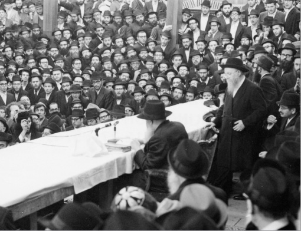

Tremendous Bittul
He was the rosh yeshiva of Tomchei T’mimim in 770, the chozer of the Rebbe Rayatz, the “Sar HaMashkim” at the Rebbe’s farbrengens, in charge of baking the Rebbe’s matzos, leader of the group of shluchim to Eretz Yisroel and “father” of the T’mimim.

HIS LIFE IN EUROPE
R’ Mordechai Mentlick was born in 5672/1912 to R’ Pinchas and Mrs. Mentlick, pious Jews. He was born in Galicia, where there were various Chassidic courts to which his family belonged. His parents and his family perished in the Holocaust.
He began learning in Yeshivas Tomchei T’mimim in Otvotzk around 1937. The Rebbe Rayatz lived there at the time. R’ Dovid Stockhammer from the United States, a very G-d fearing Jew (there are many letters to him in the Igros Kodesh of the Rebbeim) sent his two daughters to Otvotzk so they could marry yeshiva bachurim. He did this upon the recommendation of R’ Mordechai Chafetz who had traveled to the US on behalf of the Rebbe Rayatz. The two weddings took place with a brief interlude between them. The first was R’ Mordechai Mentlick who married Gittel and a week later, R’ Moshe Pinchas Katz married Mindel.
While still in Otvotzk, R’ Mentlick was the chozer of the Rebbe Rayatz, there being no one else up to the job. Although our Rebbe would say a maamer with his eyes closed, previous Rebbeim said maamarim with their eyes open and they would constantly look at one person so as not to be distracted (the Rebbe Rashab would look at his only son, later his successor). They say that when the Rebbe Rayatz was in Otvotzk, he would look at R’ Mordechai Mentlick and R’ Shmuel Zalmanov (who were known as “der shvartzer (Zalmanov) un der geller (Mentlick)”) when he said a maamer. That he would gaze at them shows how battul and mekushar they were to the Rebbe.
The Rebbe Rayatz would sell his chametz to R’ Mentlick before Pesach, as this is the practice of Admorei Chabad, to sell the chametz to a rav who then sells it to the gentile as a representative guarantor.
MOVING TO THE UNITED STATES
Several years later, the two couples left Otvotzk and set sail to America to their father-in-law’s home. The Rebbe Rayatz told R’ Mordechai to review Chassidus in each place they would stop along their journey. They arrived in Marseilles in the middle of the week and R’ Mordechai looked for a place where he could review Chassidus.
By Erev Shabbos, he still had not found a suitable place and he wanted to remain there for Shabbos. The captain of the ship refused and told him emphatically, if they wanted to stay for Shabbos, they would have to stay for quite some time until the next ship came along that would be sailing to the US.
Loyal to the instructions he received from the Rebbe, R’ Mordechai remained there in order to review Chassidus on Shabbos, and they were only able to sail for the US a number of days later. They found out that the earlier ship, on which they had planned to travel and that had not waited for them, had been sunk by the Germans.
Upon arriving in the US, the Mentlicks settled in Newark, New Jersey. R’ Mentlick became a teacher in Yeshivas Tomchei T’mimim in 770 and he would travel every day from Newark to Brooklyn and back. Throughout the years, he was very particular about the timing of the s’darim. He arrived for Nigleh at precisely eleven o’clock, when it began. In later years, when he moved to Crown Heights, he would also attend Chassidus on Shabbos morning at precisely eight o’clock.
On Yud Shevat 5710, upon the passing of the Rebbe Rayatz, many Lubavitcher Chassidim from Brownsville, a neighborhood at the end of Eastern Parkway, went to 770 and wanted to remain there after Shacharis. The Rebbe, who was then called Ramash, told them to return home and said there is no sadness on Shabbos and they had to eat the Shabbos meal.
R’ Mentlick then turned to the Chassidim and said emotionally, “We have a Rebbe!” He had already accepted the Rebbe as the Nasi and this demonstrated his hiskashrus to the Rebbe in every detail, all his life.
“SAR HAMASHKIM”
R’ Mentlick was the Rebbe’s “Sar HaMashkim” from the start of the Rebbe’s nesius. At the beginning of every farbrengen, he would pour wine into the Rebbe’s cup and continue to refill it during the farbrengen. One time, in 5711, the Rebbe asked R’ Mentlick to pour l’chaim for the participants at the farbrengen. When someone said he wanted mashke from the Alter Rebbe himself, the Rebbe said that in Kabbala and Chassidus there are two approaches to describing the “kav” – whether it is one straight line or it is comprised of dots. Based on this, he explained that all the Rebbeim are one entity. Then, the Rebbe told this person that R’ Mentlick is his “Sar HaMashkim” and they should receive from him.
On another occasion, the Rebbe said at a farbrengen, “I am pleased that R’ Mentlick serves me.” Everyone could see R’ Mentlick’s subservience to the Rebbe in every detail, especially in the pouring of wine. The manner in which he went over to pour the wine, with awe and respect, was apparent every time. With kos shel bracha also, he would stand for hours with a bottle and refill the Rebbe’s cup as soon as it was emptied.
R’ Michoel Golomb, mashpia in 770, related, “One Shabbos, it was already in his later years, when he suffered from a serious illness, R’ Mentlick pushed himself and came, as always, to be the Rebbe’s ‘Sar HaMashkim.’ His hands shook, but he persisted and tried to pour the wine into the Rebbe’s cup, albeit without success. The Rebbe took the bottle from him and poured himself. To many it looked as though something ‘otherworldly’ had transpired. Indeed, this was the last time that R’ Mentlick poured wine, for after that he was bedridden until he passed.”
ROSH YESHIVA
A few years after he arrived, R’ Mentlick was appointed as rosh yeshiva in 770. In his possession was a note that he received from the Rebbe Rayatz which said: I hereby appoint you as the menahel and rosh yeshiva here. From that moment on, those words defined his very existence, his life and his essence, and his students saw him as the loving “father” of the T’mimim. For a while, he switched to Yeshivas Tomchei T’mimim on Bedford Avenue where he was the rosh yeshiva. He was replaced in 770 by R’ Chaim Meir Bukiet a”h.
He would give shiurim in Nigleh every week. I heard from R’ Y.Y. Wilschansky, rosh yeshiva in Tzfas, that the focus on proper understanding of the subject matter, developing and clarifying the idea from every angle, was apparent in every shiur. He was one of the main editors of Shaarei Yehuda on Shas and some say that the style of his shiurim was like that of his rebbi, R’ Yehuda Eber, who authored that work.
R’ Mentlick published a book called Imrei Mordechai with chiddushim on Meseches Bava Basra, according to his unique approach. He also published pamphlets on various topics.
Every week, he gave over a Gemara shiur to Anash in the home of R’ Tzvi Hirsh Chitrik a”h. He would give another shiur for Anash every Sunday morning in the Rebbe’s sichos. He would incorporate the sources and footnotes into his class and explain the sicha in wondrous depth. This shiur lasted until his final days.
During the years that the Rebbe sent a “General Letter” for Rosh HaShana and Pesach about the meaning of the Yom Tov, he would sit for hours and look up all the sources. A few days after the letter was publicized, he would teach the letter to the talmidim of the yeshiva and Anash with all the sources the Rebbe provided for the letter.
If he had questions, he would ask the Rebbe and would receive responses and explanations. As soon as he received them, he shared them with others.
R’ Mentlick was in charge of the sh’chita course for the talmidim of the yeshiva. They say that this appointment came from the Rebbe.
EXAMS
In Elul 5723/1962, the Rebbe spoke about the need for tests. The Rebbe asked that all the bachurim who learned in yeshiva, including the guests who came for Tishrei, be tested on what they learned. In order that there be no delay, the Rebbe asked that the tests begin that same day. The tests started on Motzaei Shabbos.
After that, R’ Mentlick was in charge of tests. From the beginning of Slichos until after Yom Kippur, you could not speak to him about anything but tests. That is all he was busy with. He would get rabbanim to test the bachurim. The Rebbe asked that guests who came for Tishrei, who were rabbanim, test the bachurim. R’ Mentlick made sure that everyone was tested and he would submit the test results to the Rebbe.
In the winter months there were also tests given by the hanhala of the yeshiva in 770 – R’ Mentlick, R’ Piekarski a”h and R’ Labkowski.
R’ Mentlick was exacting with every detail, in life and especially with these tests. He wanted every talmid to know the material from beginning to end. In the event that a talmid did not know it, he tried, pleasantly but firmly, to show the bachur that he did not know it. He would do this in a way that would not offend the bachur, but would lead him to understand that next time had to be better.
We see a rare reference from the Rebbe to the results of the tests that R’ Mentlick submitted in a letter dated 4 Teves 5726: Many thanks, many thanks for the good news. May you relate good news, constantly all the days…
On 20 Shvat 5721, the Rebbe wrote: I received your letter with the good news about the test results that they knew how to answer properly and clearly. Many thanks for the gratification and satisfaction that you caused with this information, and in the measure of Hashem, which is measure for measure but many times over, may you receive good tidings that cause true satisfaction in all your matters.
TORAH JOURNALS
As a rosh yeshiva, R’ Mentlick was responsible for publishing Torah journals of the talmidim, Pilpul HaTalmidim and Pilpulim U’Biurim. The first one was to publicize the shiurim of the “kanim” (lit. branches; see following section), and the latter was meant to serve as a platform for the other bachurim who wanted to share their chiddushim.
When R’ Y.Y. Wilschansky was a bachur in 770, he was asked by R’ Mentlick to edit these journals. He spoke about R’ Mentlick’s exactitude:
“R’ Mentlick went over every pilpul and ensured that they were perfect. He put even more time into his own pilpul. He would have his shiurim written and edited and then he would review what they wrote.”
“THE SEVEN BRANCHES OF THE MENORAH”
In 770 it was customary, by the Rebbe’s instruction, for the hanhala to appoint seven of the best bachurim in Nigleh to give a pilpul once a week, and seven in Chassidus. The pilpul in Nigleh was given on Friday morning and the pilpul in Chassidus was given Friday night before Kabbalas Shabbos. These bachurim were called, as per the Rebbe’s instruction, the “Seven Branches of the Menorah.” R’ Mentlick loved the “kanim” and took care of all their needs.
At the end of 5723, when the members of the hanhala had yechidus (they would have yechidus every Erev Rosh Chodesh; it started with every week, then every two weeks and then once in a few months, and then it stopped altogether), the Rebbe asked them why the “kanim” did not review inyanim in Nigleh from the Tzemach Tzedek when he wrote a number of s’farim in Nigleh.
KINUS HA’TORAH
The Kinusei Ha’Torah programs take place till this day, in 770, on Isru Chag Sukkos, Pesach, and Shavuos. R’ Mentlick was in charge of the Kinus – making sure it happened, inviting and ensuring that rabbanim attended – those who were going to address the Kinus and those who were merely going to attend without speaking. As the person in charge of the Kinus, he would receive challa and water from the Rebbe for the participants.
After the Kinus Torah, R’ Mentlick would hold a farbrengen where he distributed the challa and water that he received the day before from the Rebbe.
Once a year, R’ Mentlick would put out a booklet called “Kinus Torah,” which contained the explanations and pilpulim that were said at the Kinus Ha’Torah.
BAKING MATZOS
There was a special matza baking for the Rebbeim, as is related at length in the sichos of the Rebbe Rayatz. By the Rebbe, the first person in charge was Rabbi Eliyahu Yochil Simpson a”h. R’ Mentlick also took part in the work of cutting the wheat and in the baking. From the moment the baking began until the end, R’ Mentlick did not utter a word. As the Rebbe’s “worker,” he worked devotedly and energetically to the last moment. He would not daven on the day of the matza baking until after he had finished all that was required of him. Only then, did he put on his tallis and t’fillin.
Every year, R’ Simpson would receive a piece of matza from the Rebbe on Erev Pesach in appreciation for his work. One time, when the Rebbe asked “Where is R’ Simpson?” and he was not present, R’ Mentlick received the piece of matza instead of him.
In later years, R’ Mentlick was appointed in charge of the matza baking. It once happened that while he was traveling in order to cut the wheat, there was a surprise farbrengen with the Rebbe. Despite the feeling of having missed out, he said he wasn’t at all sorry about not being at the farbrengen, since he was involved in work for the Rebbe at that time.
ON SHLICHUS FOR THE REBBE
R’ Mentlick was appointed by the Rebbe to be in charge of groups of bachurim to Australia, and later, the groups of shluchim to Eretz Yisroel in 5736-5737-5738. Although these groups were sent under the auspices of the Rebbe’s secretariat, he was the one who actually chose which bachurim would go to Australia and which would serve as shluchim to Eretz Yisroel. In the days preceding the trip, he did not rest for a moment until he had fulfilled the Rebbe’s wishes and had chosen an appropriate group.
After the shluchim were picked, he accompanied them to Eretz Yisroel and when they visited government officials and at the president’s residence. The Rebbe personally sent him to accompany them, which is why throughout his stay in Eretz Yisroel he wore a gartel, even when he met with President Efraim Katzir. For the same reason, he did not visit other places. However, before his return home, he was told that the Rebbe wanted to know whether he had visited the holy places. When he said he had not, the Rebbe told him to stay another day and to visit the holy sites in Eretz Yisroel. Other than that, he did not even visit his only relative who lived in Eretz Yisroel and as soon as he completed his shlichus, he returned to 770.
HIS CONCERN FOR THE BACHURIM
R’ Mentlick was in charge of the fund that helped the bachurim of 770 who were in need, and was extremely dedicated to running it. He took care of all the bachurim, especially the bachurim on K’vutza for whom he and R’ Dovid Raskin were responsible. Every year, on Purim, he would go to the Rebbe’s room and the Rebbe would give him a donation for Kupas Bachurim.
Before each Pesach, he made sure that the bachurim were dressed from head to toe, except for two items that he wanted the bachurim to buy for themselves: a yarmulke and tzitzis.
His concern for the bachurim wasn’t limited to clothing. Any bachur who needed something was taken care of by him. If a bachur needed shoes, he would be given money to buy new shoes each season. R’ Yaakov Goldberg, nosei v’nosein in 770 said that R’ Mentlick once met him and saw that his shoes had holes. He asked him whether he needed money for new shoes. R’ Goldberg, who was embarrassed to take money from R’ Mentlick, said he had other shoes that he would wear. A few days later, R’ Mentlick saw him and asked, “Where are the shoes that you said you have? Do you need money perhaps?”
Although he was devoted to the bachurim, he did not let a bachur feel that he could do as he pleased. They say he once asked a bachur where he was during the previous seder. The bachur said he did not feel well and had to go to the doctor. R’ Mentlick inquired – which doctor, where did he live, what hurt him, what did the doctor say, what medication did he prescribe. After all these questions, the bachur was sure that he had finished being cross examined, but then R’ Mentlick said, “But this doctor, Dr. Ness, died a few months ago!”
EXACTITUDE
R’ Mentlick’s meticulousness was well known. He was exacting down to the last detail, not only regarding the timing of the s’darim that he was in charge of.
R’ Kuti Rapp, mashgiach in 770, relates, “It was the beginning of the 80’s when R’ Mentlick asked me for help. That day, right after Shacharis in 770, there was going to be a test in Yeshivas Chovevei Torah given by R’ Eliyahu Landau. He wanted me to go to ‘Ess ‘N Bentch’ and buy a cup of tea and cake for R’ Landau. He gave me two dollars and asked me to bring the snack to the yeshiva.
“Later in the day, R’ Mentlick asked me if there had been any change or had I needed more money. I told him that it had cost $2.10 and that it was a paltry sum and it didn’t matter. After the Yomim Nora’im, Sukkos and Shmini Atzeres had passed, one day R’ Mentlick came over to me and gave me a dime and said, ‘This is for what I owe you.’ That was R’ Mentlick. He did not forget a thing, even ten cents.”
R’ Golomb added, “One time I needed written approval for my brother’s smicha certificate. My brother had started learning it somewhere else and finished in 770. I asked R’ Mentlick to write an approval letter. He arranged with me that I would go over to him after Maariv and he would bring me the letter.
“That day, the Rebbe returned from the Ohel late, and Mincha Maariv took place at the same time. In the confusion, I forgot about it. The next day, I went over to R’ Mentlick and asked him for the letter. When he asked me where I was the night before, I said that due to the confusion, I had forgotten. He said, ‘I waited for you here for two hours.’”
HIS PERSONALITY AND STYLE
In general, his manner of speech was unique. He would articulate clearly, word by word, and he used both hands for emphasis. They say that he went to the Rebbe Rayatz and asked for a bracha that he shouldn’t stammer. The Rebbe told him to speak more slowly and forcefully, and the stutter would disappear.
I heard from R’ Wilschansky that although some people thought that his slow manner of speech reflected his slow comprehension, the opposite was true, i.e. despite his slow speech, he thought quickly as was apparent many times.
R’ Mentlick was a very “lebedige” (lively) Jew with a perpetual pleasant disposition. Even when things were not good, he would try to give the impression that all was well. At R’ Yaakov Goldberg’s vort (his wife is R’ Mentlick’s niece), they asked R’ Mentlick to speak and he said he would speak “for a few minutes.” When an hour went by and he was still talking, he stopped and said, “I said that I would speak for a few minutes and I stand by what I said. The ‘few minutes’ begin now.”
He once saw a bachur who had fallen asleep over his Gemara. He smiled and said, “He is deeply immersed in the Gemara.”
WARM AND LOVING HEART
Rabbi Labkowski, rosh yeshiva in 770 today, tells about the tremendous feelings R’ Mentlick had for every bachur:
“The way it used to be was that before bachurim came to learn in 770, they learned for a while in Morristown. My oldest son learned there too. One day, R’ Mentlick asked to see my son. He grasped him by the head and kissed him warmly. Then he explained to me that he knew the material on the test so well he couldn’t help but kiss him.”
Whenever he saw a child, he would kiss him. He himself did not have children and he had a great love for children.
R’ Goldberg tells about his great love for children:
“I was once in a taxi with my daughter who was a year and a half old. My uncle, R’ Mentlick was also in the taxi and my daughter began playing with his beard. At first he was frightened, “Shall a girl touch me?” and he added, “Is she three yet?”
“When I said she was only a year and a half, he let her do as she pleased and even encouraged her to play with his beard.”
In connection with this, when he was in the hospital, he did not allow a female nurse to care for him. He asked for a doctor or a male nurse. One time, the doctors called his relative, R’ Katz, to the department. R’ Mentlick had refused to speak for a number of days and they wanted to know what was going on.
R’ Katz went into his room and asked him why he wasn’t speaking to the doctors. He maintained that a female nurse had cared for him, but the doctors vehemently said this wasn’t true. It turned out that it was a male nurse with long hair.
• • •
He became sick with cancer in his later years and was hospitalized many times. When the doctors wanted to operate, the Rebbe said he was too delicate for surgery and it wasn’t necessary. To the amazement of the doctors, R’ Mentlick recovered without an operation and lived for a while afterward. In 5747 the disease went into remission and he made a thanksgiving meal, but a few months later it came back in full force.
He passed away on Motzaei Shabbos B’Reishis, 24 Tishrei 5748, at the time that he used to pour wine into the Rebbe’s cup for Kos Shel Bracha.
His funeral took place the next day, on Sunday afternoon, and his burial took place when the Kinus Ha’Torah, which he had run for years, began.
TREMENDOUS BITTUL
R’ Mentlick’s bittul to the Rebbe was unusual even among great mekusharim. He never sat at a farbrengen or at a t’filla with the Rebbe.
Although his place was on the first bench on the left of the Aron Kodesh, where he davened, his tremendous bittul did not allow him to sit in the Rebbe’s presence. One time, he even gave his place to a weak bachur who found it difficult to stand on Yom Kippur.
Sholom Yehuda Ginsberg. "Tremendous Bittul." Beis Moshiach, no. 851 (September 28, 2012).